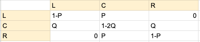

The Problem?
One day I was playing Subway Surfers, and I couldn't help but feel that coins were more heavily dispersed amongst the edge rows. Now if you're not familiar with Subway Surfers, it's got power-ups, and the one I'm talking about is called a jetpack. The jetpack raises the player above all the obstacles and leaves the players to follow a path of coins. These coins transfer between the 3 lanes a player can run in, and one can't help but think, "If I couldn't switch lanes, which one would give me the most coins?" Are coins equally distributed across all three lanes in Subway Surfer? If one were to deploy a jetpack, and could only pick a single lane to remain in for the duration of the jetpack's fuel reserves, which lane would a clever man choose? What statistical methods might that wise woman employ to make such a determination? I set out seeking the source of this wisdom, and found Master Markov. It is his chains that guide me now through The Subway. Now, Markov Chains are a way to calculate probability for things that don't stop. Basically, one takes a representation of the movement between states as a matrix transformation and performs an integral on it, I think. I've never taken a statistics course.  This is the initial matrix we set up, and when performing the integration we get these three equations: 0.33 (1 - P) + 0.33 Q 0.66 P + 0.33 (1 - 2 Q) 0.33 (1 - P) + 0.33 Q Which simplifies to P=Q. Underwhelmingly
Simulating data with set P and Q
By default P and Q are set as close to 1/3 as possible. Soon I will update this to allow N to change. N is the number of 'lanes' in the problem.
P:
Q:
N:
Custom Inputs
Flashing Colors (like dangerously fast flashing)